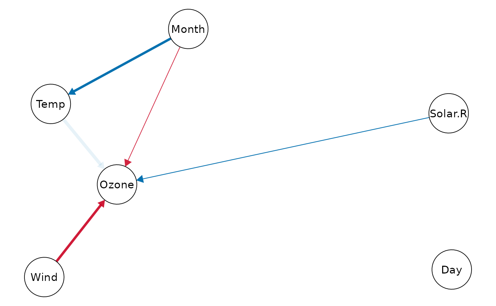
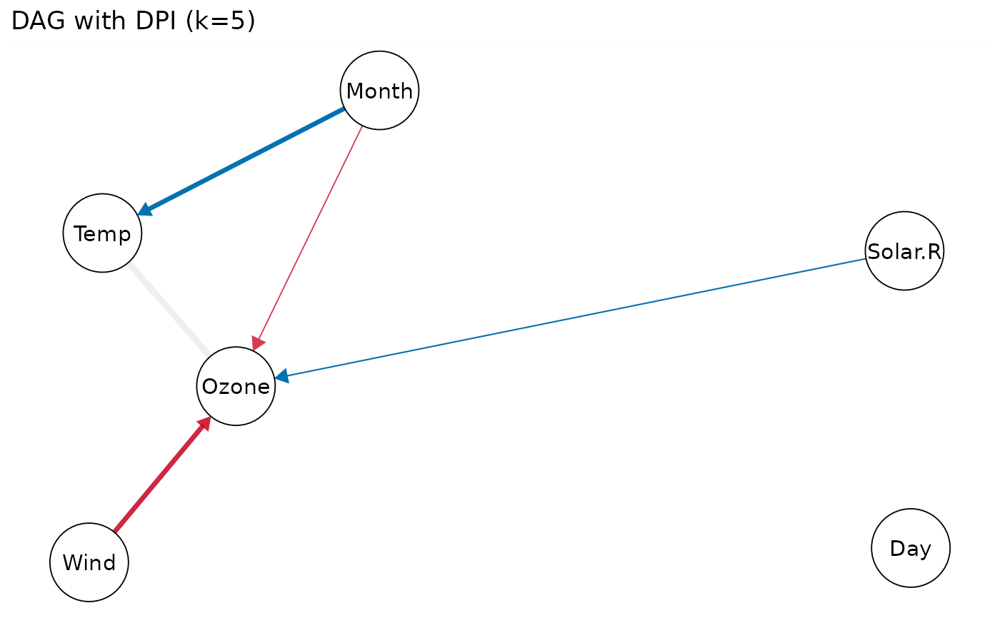
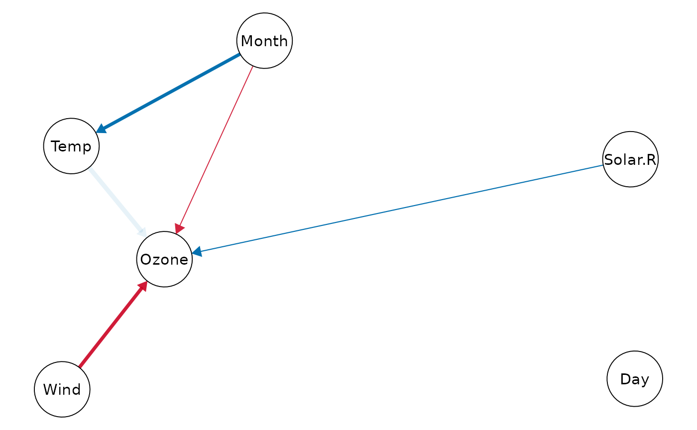
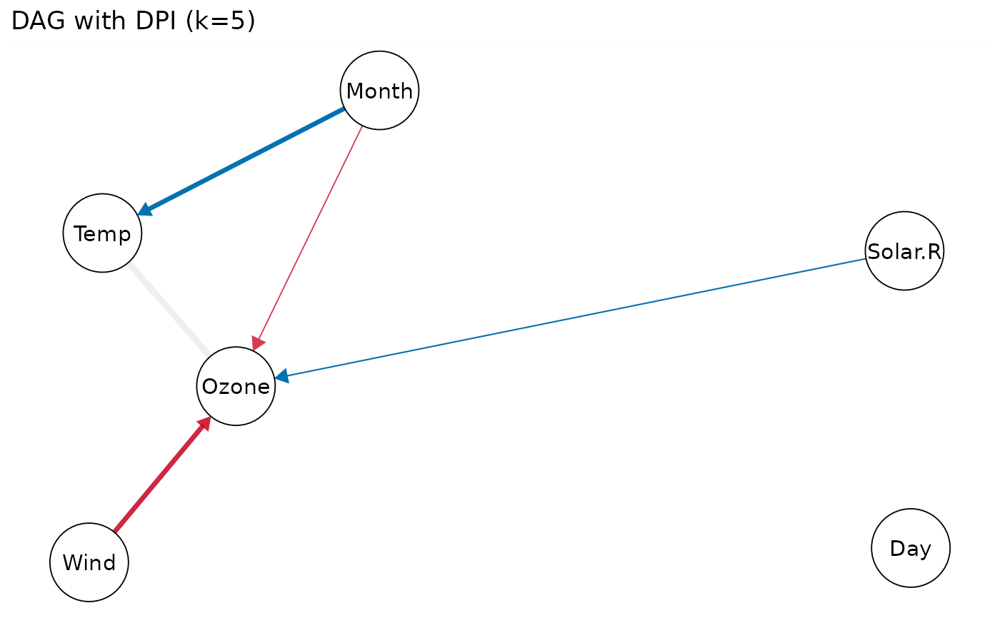

Directed acyclic graphs (DAGs) via DPI exploratory analysis (causal discovery) for all significant partial rs.
Source:R/DPI.R
DPI_dag.RdDirected acyclic graphs (DAGs) via DPI exploratory analysis (causal discovery) for all significant partial rs.
Usage
DPI_dag(
data,
k.covs = 1,
n.sim = 1000,
alpha = 0.05,
bonf = FALSE,
pseudoBF = FALSE,
seed = NULL,
node.text.size = 1.2,
progress,
file = NULL,
width = 6,
height = 4,
dpi = 500
)Arguments
- data
A dataset with at least 3 variables.
- k.covs
An integer vector (e.g.,
1:10) of number of random covariates (simulating potential omitted variables) added to each simulation sample. Defaults to1. For details, seeDPI().- n.sim
Number of simulation samples. Defaults to
1000.- alpha
Significance level for computing the Normalized Penalty score (0~1) based on p value of partial correlation between
XandY. Defaults to0.05.- bonf
Bonferroni correction to control for false positive rates:
alphais divided by, and p values are multiplied by, the number of comparisons.Defaults to
FALSE: No correction, suitable if you plan to test only one pair of variables.TRUE: Usingk * (k - 1) / 2(all pairs of variables) wherek = length(data).A user-specified number of comparisons.
- pseudoBF
Use normalized pseudo Bayes Factors
sigmoid(log(PseudoBF10))alternatively as the Normalized Penalty score (0~1). Pseudo Bayes Factors are computed from p value of X-Y partial relationship and total sample size, using the transformation rules proposed by Wagenmakers (2022) doi:10.31234/osf.io/egydq .Defaults to
FALSEbecause it makes less penalties for insignificant partial relationships betweenXandY, see Examples inDPI()and online documentation.- seed
Random seed for replicable results. Defaults to
NULL.- node.text.size
Scalar on the font size of node (variable) labels. Defaults to
1.2.- progress
Show progress bar. Defaults to
TRUE(iflength(k.covs)>= 5).- file
File name of saved plot (
".png"or".pdf").- width, height
Width and height (in inches) of saved plot. Defaults to
6and4.- dpi
Dots per inch (figure resolution). Defaults to
500.
Examples
# partial correlation networks (undirected)
cor_net(airquality, "pcor")
#> Displaying Partial Correlation Network
 # directed acyclic graphs (grey edge = insignificant DPI)
dpi.dag = DPI_dag(airquality, k.covs=c(1,3,5), seed=1)
#> Sample size: N.valid = 111
#> Normalized penalty method: Sigmoid(p/alpha) = 1 - tanh(p.xy/alpha/2)
#> Simulation sample setting: k.covs = 1, 3, and 5, n.sim = 1000, seed = 1
#> False positive rates (FPR) control: Alpha = 0.05 (Bonferroni correction = 1)
#>
#> Exploring [1/5]:
#> r.partial = 0.560, p = 4e-10 *** (PseudoBF10 = 8.650e+07)
#> --------- DPI["Temp"->"Ozone"](1) = 0.023, p = 5e-05 ***
#> --------- DPI["Temp"->"Ozone"](3) = 0.023, p = 0.020 *
#> --------- DPI["Temp"->"Ozone"](5) = 0.022, p = 0.085 .
#>
#> Exploring [2/5]:
#> r.partial = 0.438, p = 2e-06 *** (PseudoBF10 = 13070.747)
#> --------- DPI["Month"->"Temp"](1) = 0.364, p = <1e-99 ***
#> --------- DPI["Month"->"Temp"](3) = 0.357, p = 8e-87 ***
#> --------- DPI["Month"->"Temp"](5) = 0.350, p = 1e-52 ***
#>
#> Exploring [3/5]:
#> r.partial = 0.205, p = 0.034 * (PseudoBF10 = 0.927)
#> --------- DPI["Solar.R"->"Ozone"](1) = 0.297, p = 3e-21 ***
#> --------- DPI["Solar.R"->"Ozone"](3) = 0.281, p = 4e-07 ***
#> --------- DPI["Solar.R"->"Ozone"](5) = 0.265, p = 2e-04 ***
#>
#> Exploring [4/5]:
#> r.partial = -0.192, p = 0.047 * (PseudoBF10 = 0.671)
#> --------- DPI["Month"->"Ozone"](1) = 0.214, p = 6e-12 ***
#> --------- DPI["Month"->"Ozone"](3) = 0.204, p = 1e-04 ***
#> --------- DPI["Month"->"Ozone"](5) = 0.193, p = 0.003 **
#>
#> Exploring [5/5]:
#> r.partial = -0.449, p = 1e-06 *** (PseudoBF10 = 25695.789)
#> --------- DPI["Wind"->"Ozone"](1) = 0.223, p = <1e-99 ***
#> --------- DPI["Wind"->"Ozone"](3) = 0.219, p = 3e-50 ***
#> --------- DPI["Wind"->"Ozone"](5) = 0.214, p = 8e-28 ***
print(dpi.dag, k=1) # DAG with DPI(k=1)
#> Displaying DAG with DPI algorithm (k.cov = 1)
print(dpi.dag, k=3) # DAG with DPI(k=3)
#> Displaying DAG with DPI algorithm (k.cov = 3)
print(dpi.dag, k=5) # DAG with DPI(k=5)
#> Displaying DAG with DPI algorithm (k.cov = 5)
# directed acyclic graphs (grey edge = insignificant DPI)
dpi.dag = DPI_dag(airquality, k.covs=c(1,3,5), seed=1)
#> Sample size: N.valid = 111
#> Normalized penalty method: Sigmoid(p/alpha) = 1 - tanh(p.xy/alpha/2)
#> Simulation sample setting: k.covs = 1, 3, and 5, n.sim = 1000, seed = 1
#> False positive rates (FPR) control: Alpha = 0.05 (Bonferroni correction = 1)
#>
#> Exploring [1/5]:
#> r.partial = 0.560, p = 4e-10 *** (PseudoBF10 = 8.650e+07)
#> --------- DPI["Temp"->"Ozone"](1) = 0.023, p = 5e-05 ***
#> --------- DPI["Temp"->"Ozone"](3) = 0.023, p = 0.020 *
#> --------- DPI["Temp"->"Ozone"](5) = 0.022, p = 0.085 .
#>
#> Exploring [2/5]:
#> r.partial = 0.438, p = 2e-06 *** (PseudoBF10 = 13070.747)
#> --------- DPI["Month"->"Temp"](1) = 0.364, p = <1e-99 ***
#> --------- DPI["Month"->"Temp"](3) = 0.357, p = 8e-87 ***
#> --------- DPI["Month"->"Temp"](5) = 0.350, p = 1e-52 ***
#>
#> Exploring [3/5]:
#> r.partial = 0.205, p = 0.034 * (PseudoBF10 = 0.927)
#> --------- DPI["Solar.R"->"Ozone"](1) = 0.297, p = 3e-21 ***
#> --------- DPI["Solar.R"->"Ozone"](3) = 0.281, p = 4e-07 ***
#> --------- DPI["Solar.R"->"Ozone"](5) = 0.265, p = 2e-04 ***
#>
#> Exploring [4/5]:
#> r.partial = -0.192, p = 0.047 * (PseudoBF10 = 0.671)
#> --------- DPI["Month"->"Ozone"](1) = 0.214, p = 6e-12 ***
#> --------- DPI["Month"->"Ozone"](3) = 0.204, p = 1e-04 ***
#> --------- DPI["Month"->"Ozone"](5) = 0.193, p = 0.003 **
#>
#> Exploring [5/5]:
#> r.partial = -0.449, p = 1e-06 *** (PseudoBF10 = 25695.789)
#> --------- DPI["Wind"->"Ozone"](1) = 0.223, p = <1e-99 ***
#> --------- DPI["Wind"->"Ozone"](3) = 0.219, p = 3e-50 ***
#> --------- DPI["Wind"->"Ozone"](5) = 0.214, p = 8e-28 ***
print(dpi.dag, k=1) # DAG with DPI(k=1)
#> Displaying DAG with DPI algorithm (k.cov = 1)
print(dpi.dag, k=3) # DAG with DPI(k=3)
#> Displaying DAG with DPI algorithm (k.cov = 3)
print(dpi.dag, k=5) # DAG with DPI(k=5)
#> Displaying DAG with DPI algorithm (k.cov = 5)
 # set edge labels and edge transparency
# (grey edge = insignificant DPI)
print(dpi.dag, k=5, show.label=FALSE, faded.dpi=TRUE)
#> Displaying DAG with DPI algorithm (k.cov = 5)

# modify ggplot attributes
gg = plot(dpi.dag, k=5, show.label=FALSE, faded.dpi=TRUE)
gg + labs(title="DAG with DPI (k=5)")

# visualize DPIs of multiple paths
ggplot(dpi.dag$DPI, aes(x=k.cov, y=DPI)) +
geom_ribbon(
aes(ymin=Sim.LLCI, ymax=Sim.ULCI, fill=path),
alpha=0.1) +
geom_line(aes(color=path), linewidth=0.7) +
geom_point(aes(color=path)) +
geom_hline(yintercept=0, color="red",
linetype="dashed") +
scale_y_continuous(limits=c(NA, 0.5)) +
labs(color="Directed Prediction",
fill="Directed Prediction") +
theme_classic()
# set edge labels and edge transparency
# (grey edge = insignificant DPI)
print(dpi.dag, k=5, show.label=FALSE, faded.dpi=TRUE)
#> Displaying DAG with DPI algorithm (k.cov = 5)

# modify ggplot attributes
gg = plot(dpi.dag, k=5, show.label=FALSE, faded.dpi=TRUE)
gg + labs(title="DAG with DPI (k=5)")

# visualize DPIs of multiple paths
ggplot(dpi.dag$DPI, aes(x=k.cov, y=DPI)) +
geom_ribbon(
aes(ymin=Sim.LLCI, ymax=Sim.ULCI, fill=path),
alpha=0.1) +
geom_line(aes(color=path), linewidth=0.7) +
geom_point(aes(color=path)) +
geom_hline(yintercept=0, color="red",
linetype="dashed") +
scale_y_continuous(limits=c(NA, 0.5)) +
labs(color="Directed Prediction",
fill="Directed Prediction") +
theme_classic()